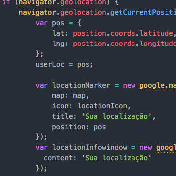

Somos um laboratório de visualização urbana
Nós acreditamos no uso de análise e visualização de dados para
entender e solucionar problemas urbanos.
Utilizamos inteligência geográfica: a capacidade de visualizar dados espaciais
e analisar relações entre fenômenos e lugares.
Desenvolvemos análises, mapeamentos e visualizações sob medida
em tópicos como mobilidade, urbanização, desigualdade e sustentabilidade.
O que fazemos
-
Análise e desenvolvimento
De dados espaciais através de visualizações e mapeamento.
-
Cursos
Em ferramentas open-source de inteligência geográfica.
Análise e desenvolvimento
Para entender e propor estratégias para problemas urbanos.
Dados e localização: preparando o terreno
Toda análise começa uma questão. A partir desta, buscamos dados e localizações para melhor entendê-la.

Visualização: colocando os dados no mapa
Visualizar os dados espacialmente nos ajuda a procurar padrões para responder nossas questões.
Cruzamentos: aprofundando a análise
Análises são enriquecidas ao serem cruzadas com outros dados, demonstrando correlações e semelhanças.

Transformações: mudanças temporais
Análises podem ser temporais além de espaciais, ajudando a revelar a formação de padrões ao longo do tempo.
Desenvolvimento: de análise a produto
Comunicar os resultados é crucial para assegurar o impacto da análise. Para isso, desenolvemos produtos sob medida, de sites interativos a relatórios impressos.
Cursos
Capacitação em ferramentas open source de inteligência geográfica,
voltada para arquitetos, urbanistas, jornalistas, designers e ativistas.
-
Introdução a GIS e mapeamento
Aprenda a usar o software livre e gratuito QGIS para criar mapas e realizar análises espaciais.
Veja mais e se inscreva -

Introdução a mapas online
Aprenda a usar programação e plataformas online para criar sites e aplicativos web com foco em mapas.
Curso em elaboração
Projetos selecionados
-
Painel das mortes no trânsito
Mapas e gráficos interativos que permitem analisar as mortes no trânsito em São Paulo.
-
Gênero e nomes de ruas
Uma análise quantitativa e espacial sobre a desigualdade de gênero nos nomes de rua em SP.
-
Onde jogar entulho
Um aplicativo web que te ajuda a encontrar o local mais próximo para destinar entulho adequadamente.
-
Mapa da outorga onerosa
Analisando os repasses do mercado imobiliário à prefeitura através de dados abertos.
-
Ciclovias no mundo
Uma série de mapas e gráficos sobre ciclovias ao redor do mundo e em SP.
Quem somos
Entre em contato
Quer um curso nosso, desenvolver um projeto, ou propor uma parceria?
Mande um email para contato@medidasp.com,
ou uma mensagem em facebook.com/medidasp.